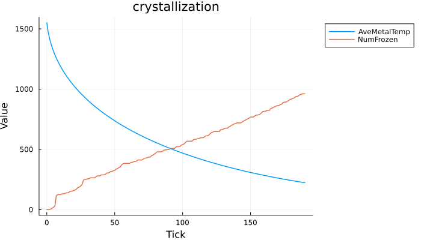
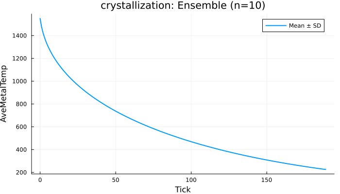
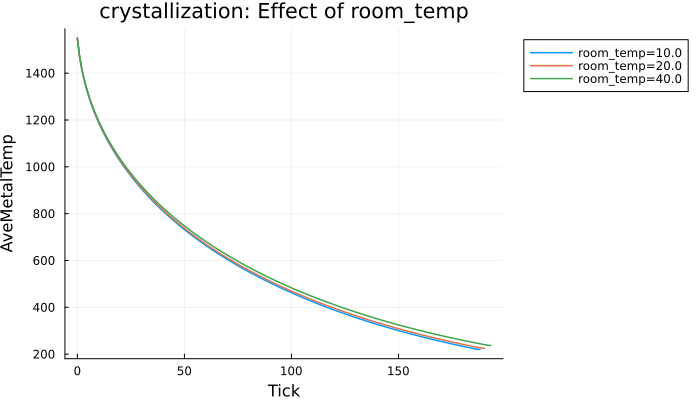

Crystallization
Overview
WHAT IS IT?
This model shows how grains are formed as a metal crystallizes.
As a metal cools, it solidifies. The first atoms to solidify have a random orientation. But when an atom solidifies next to an already solidified atom, the first atom orients itself with the solid atom, thus creating a crystal “grain”. As more atoms solidify, the grains grow. Within each grain, all the atoms are oriented the same, but different grains have different orientations.
Two grains next to each other form what is called a grain boundary. When a metal is stressed, such as when it is pulled from both ends, deformations occur in the crystal structure. As more stress is applied, these deformations pass through the crystal structure, allowing the metal to bend. Grain boundaries prevent deformations from flowing through the metal. Therefore, pieces of metal with fewer grain boundaries tend to be ductile, while pieces of metal with more grain boundaries tend to be brittle.
HOW IT WORKS
Liquid metal is placed in a room with a constant temperature much lower than that of the metal. As heat leaves the metal, the metal begins to solidify. Liquid atoms are free to rotate, but solid atoms (gray) are literally frozen. If a liquid atom is next to a solid atom, it will orient itself with it, otherwise it will rotate randomly.
Note that the actual number of atoms is small compared to a real metal sample and the metal is only two-dimensional.
THINGS TO TRY
Set HEIGHT to 19. Try to obtain the largest grains possible by systematically changing the three temperature variables. Are there multiple settings that achieve this affect? Now find the settings that result in the smallest grains. Are there multiple settings that achieve this affect?
Compare the time it takes for the metal to completely crystallize using each of the settings you found in the above paragraph. To do this, use the TIME monitor. How does crystallization time relate to grain size?
Keeping the HEIGHT 19, what is the fewest number of grains you can make? Why can you not make only one grain? From what part of the metal does crystallization always start from? Does setting CIRCLE? to OFF make any difference?
Set the ROOM-TEMP to be 20, the INIT-METAL-TEMP to be 1550, and the MELTING-TEMP to be 500. Set CIRCLE? to OFF. Now try various settings for HEIGHT and WIDTH. Which setting achieves the largest size of grains? Which setting achieves the fewest number of grains?
EXTENDING THE MODEL
Some metal applications require that the metal’s grains form long strips across the metal. To achieve this, only one side of the metal is cooled. This causes all of the crystals to begin on one side of the metal, and consequently grow across its length. This is called directional solidification. In the Procedures window, change the code so one side of the room is much cooler than the others.
Other metal applications require that metal consist of a single grain. One way to do this is to crystallize the metal in a magnetic field. This induces polarization in the metal atoms, causing them to line up. Add a procedure to the code that creates a magnetic field in the room.
NETLOGO FEATURES
In the setup procedure, a turtle is created on every patch within the requested dimensions. This is achieved by asking every patch satisfying certain conditions to sprout 1.
Note how we can draw a multi-colored histogram. The histogram primitive can only draw in one color at a time, but we work around this by calling it over and over again, plotting only one bar each time, changing the pen color each time.
With every time step, each atom’s temperature changes to the average of everything around it. To do this, each turtle has a list of all of its neighboring turtles. In this model, every patch surrounding a given turtle is either occupied by a turtle or considered to be outside the metal. Therefore, the new temperature is then taken as the average of the temperatures of the neighbor list, plus the room temperature multiplied by the maximum number of neighbors minus the number of neighbors that particular turtle has. Therefore, turtles completely surrounded by other turtles don’t average in the room temperature to their temperature, but turtles on the edge of the metal will.
RELATED MODELS
Crystallization Directed Crystallization Moving
CREDITS AND REFERENCES
Original implementation: Carrie Hobbs, for the Center for Connected Learning and Computer-Based Modeling.
HOW TO CITE
If you mention this model or the NetLogo software in a publication, we ask that you include the citations below.
For the model itself:
- Wilensky, U. (2002). NetLogo Crystallization Basic model. http://ccl.northwestern.edu/netlogo/models/CrystallizationBasic. Center for Connected Learning and Computer-Based Modeling, Northwestern University, Evanston, IL.
Please cite the NetLogo software as:
- Wilensky, U. (1999). NetLogo. http://ccl.northwestern.edu/netlogo/. Center for Connected Learning and Computer-Based Modeling, Northwestern University, Evanston, IL.
COPYRIGHT AND LICENSE
Copyright 2002 Uri Wilensky.

This model is licensed under the Creative Commons Attribution-NonCommercial-ShareAlike 3.0 License. To view a copy of this license, visit https://creativecommons.org/licenses/by-nc-sa/3.0/ or send a letter to Creative Commons, 559 Nathan Abbott Way, Stanford, California 94305, USA.
NetLogo itself is free software for non-commercial use under the terms of the GNU General Public License (see full license information here).
To inquire about commercial licenses for either NetLogo or specific models from the models library, please contact netlogo-commercial-admin@ccl.northwestern.edu.
This model was created as part of the projects: PARTICIPATORY SIMULATIONS: NETWORK-BASED DESIGN FOR SYSTEMS LEARNING IN CLASSROOMS and/or INTEGRATED SIMULATION AND MODELING ENVIRONMENT. The project gratefully acknowledges the support of the National Science Foundation (REPP & ROLE programs) – grant numbers REC #9814682 and REC-0126227.
Parameters
| Parameter | Type | Default | Description |
|---|---|---|---|
room_temp | Float64 | 20.0 | room temp |
init_metal_temp | Float64 | 1550.0 | init metal temp |
melting_temp | Float64 | 500.0 | melting temp |
metal_size | Int | 31 | 31x31 metal block |
max_ticks | Int | 200 | max ticks |
Source Code
The Julia code to run this model:
using ArkModelZoo
_, trajectory = run_crystallization()Time Series

Ensemble Runs
Ten replicates with different random seeds, showing mean ± standard deviation.

Parameter Sensitivity
Varying room_temp.

Appendix: Source Code
This model is implemented in the Ark.jl Entity-Component-System (ECS) framework. The code is split into five files, each with a distinct role:
- Parameters: a mutable struct holding all configurable values.
- Components: lightweight data types attached to individual entities (agents).
- Resources: world-level shared state accessible to all systems.
- Systems: functions that operate on entities each tick, defining model behavior.
- Model: wiring that assembles the world, registers resources and systems, and provides the run entry point.
Parameters (parameters.jl)
The parameter struct uses @kwdef so that every field has a default value and can be overridden by keyword. These defaults match the original NetLogo model’s slider settings.
Base.@kwdef mutable struct CrystallizationParams
room_temp::Float64 = 20.0
init_metal_temp::Float64 = 1550.0
melting_temp::Float64 = 500.0
metal_size::Int = 31 # 31x31 metal block
max_ticks::Int = 200
seed::Int = 42
endComponents (components.jl)
Components are lightweight data types attached to individual entities (agents). Mutable structs hold per-entity state, while empty tag structs act as markers for the ECS query system to efficiently filter entities.
struct CrystDummy endResources (resources.jl)
Resources are world-level singletons shared across all systems, used for global state and aggregate statistics.
mutable struct CrystGrid
metal_size::Int # 31 (the metal block is metal_size x metal_size)
temp::Matrix{Float64}
heading::Matrix{Float64}
neighbor_count::Matrix{Int} # precomputed: number of metal neighbors (Moore, excluding self)
sides_exposed::Matrix{Int} # precomputed: 8 - neighbor_count
end
function CrystGrid(metal_size::Int)
n = metal_size
temp = zeros(Float64, n, n)
heading = zeros(Float64, n, n)
nc = zeros(Int, n, n)
se = zeros(Int, n, n)
# Precompute neighbor counts
for x in 1:n, y in 1:n
count = 0
for dx in -1:1, dy in -1:1
(dx == 0 && dy == 0) && continue
nx, ny = x + dx, y + dy
if 1 <= nx <= n && 1 <= ny <= n
count += 1
end
end
nc[x, y] = count
se[x, y] = 8 - count
end
CrystGrid(n, temp, heading, nc, se)
end
mutable struct CrystStats
ave_metal_temp::Float64
num_frozen::Int
end
CrystStats() = CrystStats(0.0, 0)Systems (systems.jl)
Systems contain the model logic and execute in a defined order each tick. Each system struct implements either initialize! (run once at setup) or update! (run every tick).
struct InitCrystSystem <: System end
function initialize!(::InitCrystSystem, world::World)
params = get_resource(world, CrystallizationParams)
rng = get_resource(world, RNGResource).rng
grid = get_resource(world, CrystGrid)
stats = get_resource(world, CrystStats)
n = grid.metal_size
for x in 1:n, y in 1:n
grid.temp[x, y] = params.init_metal_temp
grid.heading[x, y] = 0.0 # NetLogo default heading is 0
end
stats.ave_metal_temp = params.init_metal_temp
stats.num_frozen = 0
return nothing
end
# --- Cool ---
struct CrystCoolSystem <: System end
function update!(::CrystCoolSystem, world::World)
params = get_resource(world, CrystallizationParams)
rng = get_resource(world, RNGResource).rng
grid = get_resource(world, CrystGrid)
stats = get_resource(world, CrystStats)
n = grid.metal_size
temp = grid.temp
# Early termination check: if max temp < melting-temp, stop BEFORE updating
max_temp = -Inf
for i in eachindex(temp)
temp[i] > max_temp && (max_temp = temp[i])
end
if max_temp < params.melting_temp
get_resource(world, Terminate).stop = true
return nothing
end
# Cool turtles in random order (sequential, reads current temps)
# NetLogo: neighboring-turtles includes self (at-points includes [0,0])
# Formula: total-temp = sum(neighboring-turtles temps) + room-temp * sides-exposed + own-temp
# new-temp = total-temp / (count neighboring-turtles + sides-exposed + 1)
# This counts self temp TWICE (in sum and in +temp), divisor is always 10
perm = randperm(rng, n * n)
for idx in perm
y = (idx - 1) ÷ n + 1
x = (idx - 1) % n + 1
# Sum of current neighbor temps INCLUDING self (matching NetLogo's at-points with [0,0])
neighbor_sum = temp[x, y] # self included
for dx in -1:1, dy in -1:1
(dx == 0 && dy == 0) && continue
nx, ny = x + dx, y + dy
if 1 <= nx <= n && 1 <= ny <= n
neighbor_sum += temp[nx, ny]
end
end
# NetLogo adds own temp AGAIN: total = sum(neighbors+self) + room*exposed + temp
total_temp = neighbor_sum + params.room_temp * grid.sides_exposed[x, y] + temp[x, y]
# Divisor: count(neighbors+self) + sides_exposed + 1 = always 10
divisor = (grid.neighbor_count[x, y] + 1) + grid.sides_exposed[x, y] + 1
temp[x, y] = total_temp / divisor
end
return nothing
end
# --- Rotate ---
struct CrystRotateSystem <: System end
function update!(::CrystRotateSystem, world::World)
params = get_resource(world, CrystallizationParams)
rng = get_resource(world, RNGResource).rng
grid = get_resource(world, CrystGrid)
n = grid.metal_size
temp = grid.temp
heading = grid.heading
# Check termination (may have been set in cool phase)
term = get_resource(world, Terminate)
term.stop && return nothing
# Random order
perm = randperm(rng, n * n)
for idx in perm
y = (idx - 1) ÷ n + 1
x = (idx - 1) % n + 1
temp[x, y] < params.melting_temp && continue # only process non-frozen (temp >= melting)
# Find frozen neighbors (temp <= melting_temp)
# NetLogo: neighboring-turtles includes self via [0,0] offset
frozen = Tuple{Int,Int}[]
# Include self if frozen
if temp[x, y] <= params.melting_temp
push!(frozen, (x, y))
end
for dx in -1:1, dy in -1:1
(dx == 0 && dy == 0) && continue
nx, ny = x + dx, y + dy
if 1 <= nx <= n && 1 <= ny <= n && temp[nx, ny] <= params.melting_temp
push!(frozen, (nx, ny))
end
end
if !isempty(frozen)
fx, fy = frozen[rand(rng, 1:length(frozen))]
heading[x, y] = heading[fx, fy]
else
heading[x, y] = mod(heading[x, y] + rand(rng) * 360.0, 360.0)
end
end
return nothing
end
# --- Stats ---
struct CrystStatsSystem <: System end
function update!(::CrystStatsSystem, world::World)
params = get_resource(world, CrystallizationParams)
grid = get_resource(world, CrystGrid)
stats = get_resource(world, CrystStats)
temp = grid.temp
total = 0.0
nf = 0
for i in eachindex(temp)
total += temp[i]
if temp[i] < params.melting_temp
nf += 1
end
end
n = grid.metal_size
stats.ave_metal_temp = total / (n * n)
stats.num_frozen = nf
return nothing
end
# --- Termination ---
struct CrystTerminationSystem <: System end
function update!(::CrystTerminationSystem, world::World)
params = get_resource(world, CrystallizationParams)
tick = get_resource(world, Tick)
if tick.tick + 1 >= params.max_ticks
get_resource(world, Terminate).stop = true
end
return nothing
endModel (model.jl)
The model file assembles all pieces: it creates the ECS World with the required component types, registers resources, builds the Scheduler with systems in execution order, and exposes the public run entry point. The observer pattern records the trajectory each tick.
function crystallization_world(; initial_capacity::Int = 128)
return World(CrystDummy; initial_capacity=initial_capacity, allow_mutable=true)
end
function crystallization_systems()
return (
InitCrystSystem(),
CrystCoolSystem(),
CrystRotateSystem(),
CrystStatsSystem(),
CrystTerminationSystem(),
)
end
function crystallization_model(params::CrystallizationParams = CrystallizationParams())
world = crystallization_world()
_add_standard_resources!(world, params)
add_resource!(world, CrystGrid(params.metal_size))
add_resource!(world, CrystStats())
scheduler = Scheduler(world, crystallization_systems())
initialize!(scheduler)
return scheduler
end
struct CrystallizationObserver end
function crystallization_headers(::CrystallizationObserver)
return ["AveMetalTemp", "NumFrozen"]
end
function crystallization_values(::CrystallizationObserver, world::World)
stats = get_resource(world, CrystStats)
return Float64[stats.ave_metal_temp, Float64(stats.num_frozen)]
end
function run_crystallization(; params::CrystallizationParams = CrystallizationParams(), observe::Bool = true)
return _run_model(crystallization_model, CrystallizationObserver(), crystallization_values; params, observe)
end